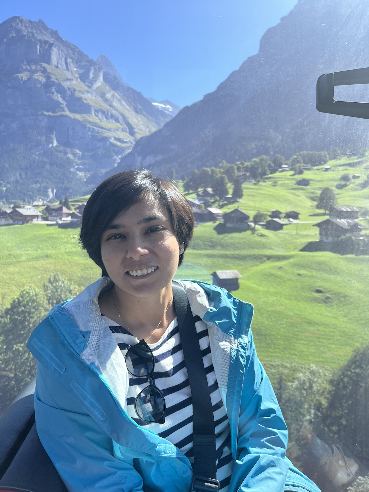

Grindelwald, Switzerland
Grindelwald, Switzerland
Reach me at [jimy3bansal@gmail.com]
About Me
Hi, I'm Jaimita Bansal. I am a Lead AI engineer at Goldman Sachs currently focused on financial data modeling and discovery through natural language. I am based out of New York!
My philosophy as an engineer is to start simple and apply complex solutions as needed.
While I appreciate science and reason, I am curious about the rest of the world which leads me to travel, explore spirituality, read books and think deeply about any idea in any discipline including sports, music, religion, art and politics - in that order.
Professional Work
- https://developer.gs.com/blog/posts/harnessing-machine-learning-improve-data-lake-client-happiness
- https://www.dataopssummit-sf.com/speaker/jaimita-bansal/
- Panelist at Kode with Klossy 2024 mentoring scholars of age 13-18 in CS.
- All Rounder Gold Medallist in Masters Program 2014-2016
Personal Interests
- Sports: Learning swimming and playing tennis nowadays. Basketball is forever love.
- Music: Found Nirvana - Smells like Teen Spirit recently.
- Religion: Reading Bhagwad Gita for the 7th time. Every reading has been different and has given me new lessons and direction.
- Art: Amazed by Primavera, Sandro Botticelli, on a visit to Florence, Italy 2023.
- Politics: I am wondering which side of the pendulum do I swing in: Conservative or Liberal.
- Cars: I drive an Audi A5 and love it.
Social